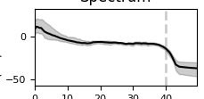

Note
Go to the end to download the full example code.
Labeling ICA components with a GUI#
This tutorial covers how to label ICA components with a GUI.
Note
Similar to mne-qt-browser, we require the users
to install a specific version of Qt. Our installation
pip install mne-icalabel[gui] will not install any
specific Qt version. Therefore, one can install Qt5
through either PyQt5 or PySide2 or a more modern
Qt6 through either PyQt6 or PySide6 depending
on their system. The users should install this separately
to use the GUI functionality. See:
https://www.riverbankcomputing.com/software/pyqt/ for more info
on installing.
Warning
The GUI is still in active development, and may contain bugs, or changes without deprecation in future versions.
import os
import mne
from mne.preprocessing import ICA
from mne_icalabel.gui import label_ica_components
Load in some sample data
sample_data_folder = mne.datasets.sample.data_path()
sample_data_raw_file = os.path.join(
sample_data_folder, "MEG", "sample", "sample_audvis_filt-0-40_raw.fif"
)
raw = mne.io.read_raw_fif(sample_data_raw_file)
# Here we'll crop to 60 seconds and drop gradiometer channels for speed
raw.crop(tmax=60.0).pick_types(meg="mag", eeg=True, stim=True, eog=True)
raw.load_data()
Opening raw data file /home/runner/mne_data/MNE-sample-data/MEG/sample/sample_audvis_filt-0-40_raw.fif...
Read a total of 4 projection items:
PCA-v1 (1 x 102) idle
PCA-v2 (1 x 102) idle
PCA-v3 (1 x 102) idle
Average EEG reference (1 x 60) idle
Range : 6450 ... 48149 = 42.956 ... 320.665 secs
Ready.
NOTE: pick_types() is a legacy function. New code should use inst.pick(...).
Reading 0 ... 9009 = 0.000 ... 59.999 secs...
Preprocess and run ICA on the data#
Before labeling components with the GUI, one needs to filter the data
and then fit the ICA instance. Afterwards, one can run the GUI using the
Raw data object and the fitted ICA instance.
Filtering raw data in 1 contiguous segment
Setting up high-pass filter at 1 Hz
FIR filter parameters
---------------------
Designing a one-pass, zero-phase, non-causal highpass filter:
- Windowed time-domain design (firwin) method
- Hamming window with 0.0194 passband ripple and 53 dB stopband attenuation
- Lower passband edge: 1.00
- Lower transition bandwidth: 1.00 Hz (-6 dB cutoff frequency: 0.50 Hz)
- Filter length: 497 samples (3.310 s)
Fitting ICA to data using 161 channels (please be patient, this may take a while)
Selecting by number: 15 components
Fitting ICA took 0.3s.
Annotate ICA components with the GUI#
The GUI will modify the ICA instance in place, and add the
labels of each component to the labels_ attribute. The
GUI will show features of the ICA components similar to the
mne.viz.plot_ica_properties() function. It will also provide an
interface to label each ICA component into one of seven categories:
Brain
Muscle
Eye
Heart
Line Noise
Channel Noise
Other
For more information on annotating ICA components, we suggest
reading through the tutorial from ICLabel
(https://labeling.ucsd.edu/tutorial/about).
gui = label_ica_components(raw, ica)
# The `ica` object is modified to contain the component labels
# after closing the GUI and can now be saved
# gui.close() # typically you close when done
# Now, we can take a look at the components, which were modified in-place
# for the ICA instance.
print(ica.labels_)
- 
Using multitaper spectrum estimation with 7 DPSS windows
Not setting metadata
30 matching events found
No baseline correction applied
0 projection items activated
Creating RawArray with float64 data, n_channels=2, n_times=9010
Range : 6450 ... 15459 = 42.956 ... 102.954 secs
Ready.
{'brain': [], 'muscle': [], 'eog': [], 'ecg': [], 'line_noise': [], 'ch_noise': [], 'other': []}
Save the labeled components#
After the GUI labels, save the components using the write_components_tsv
function. This will save the ICA annotations to disc in BIDS-Derivative for
EEG data format.
Note: BIDS-EEG-Derivatives is not fully specified, so this functionality may change in the future without notice.
# fname = '<some path to save the components>'
# write_components_tsv(ica, fname)
Total running time of the script: (0 minutes 2.498 seconds)
Estimated memory usage: 249 MB